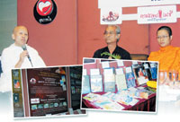

|
|
สวดมนต์-ไหว้พระ-เข้าวัด
อาจฟังแล้วดูง่ายเสียกว่า การหยิบหนังสือ "ธรรมะ" สักเล่มขึ้นมาพลิกอ่าน
เพราะดูเหมือนว่าจะต้องใช้ความพยายามทางใจมากเสียกว่าทางกาย
ความรู้สึกเชย-น่าเบื่อ-เป็นเรื่องไกลตัว ดูจะเป็นกำแพงสำหรับหนังสือประเภทนี้
เนื่องในงานครบรอบ 100 ปีพุทธทาส สำนักพิมพ์กายใจเลยจัดงานเสวนา
"เมื่อธรรมะปะทะยุคสมัย สังคมไทยสบายดีหรือ" โดยมีลูกศิษย์ลูกหาที่ศรัทธาในพระธรรมของพระพุทธทาสตั้งแต่
ว.วชิระเมธี, แม่ชีศันสนีย์ เสถียรสุต, เนาว์รัตน์ พงษ์ไพบูลย์
และ บัซชา เฉลิมชัยกิจ ประธานกรรมการสำนักพิมพ์สุขภาพใจร่วมเสวนา
สุขภาพใจเริ่มประเด็นในการเสวนาว่า เมื่อมีโอกาสได้เข้ารับใช้พระพุทธทาส
ท่านก็เคยถามว่า หนังสือธรรมะนี้มันขายได้หรือไม่ อย่างไร? ก็เลยอธิบายให้ท่านฟังว่า
ต้องปรับเปลี่ยนให้ "ธรรมะเพียวๆ" เป็น "ธรรมประยุกต์" แล้วสุดท้ายก็กระตุ้นด้วยการจัดกิจกรรมให้ถี่ขึ้น
หนังสือธรรมะถึงได้ลืมตาอ้าปากกันจนดูเหมือนจะมีกระแสหนังสือธรรมะที่ทำให้ใครต่อใครหันมาพูดถึงกันมากขึ้น
แม่ชีศันศีย์ที่เพิ่งได้รางวัลเสียงแห่งความศักดิ์สิทธิ์จากการประกวดของ
"เบเวอร์รี่ ฮิลล์" ซึ่งมี คิตาโน่ นักดนตรีชาวญี่ปุ่น, แองเจลิน่า
โจลี่, สตีเว่น ซีเกิ้ล และดาราฮอลลีวู้ดอีกคับคั่ง ได้ตั้งข้อสังเกตว่า
พฤติกรรมการเข้าวัดของคนสมัยใหม่ ไม่ใช่คนมองโลกอย่างลบเหมือนแต่ก่อน
ที่พอผิดหวังแล้วค่อยเข้าวัด อาจเป็นเหตุผลหนึ่งที่อาจกล่าวได้ว่า
ทำไมคนรุ่นใหม่ถึงสนใจหนังสือแนวนี้มากขึ้น
จากประสบการณ์การเดินทางไปพบปะคนทั่วโลก แม่ชีศันสนีย์เล็งเห็นว่า
หากฮอลลีวู้ดสามารถกำหนดโลก สร้างเทรนด์ หรือกระแสนิยมในสังคมได้จริง
จะไม่เป็นการดีหรือ หากเรารู้จักใช้คนพวกนี้ให้เป็นประโยชน์
คล้ายกับใช้ดาราเป็นสื่อสร้างเทรนด์ในการเสพธรรมะ ใช้ฮอลลีวู้ดช่วยโลกให้ดีขึ้น
"เดี๋ยวนี้ฝรั่งเขาว่ายน้ำกลับมาจากขอบสระแห่งความว่างเปล่า
ที่เขาว่ายไปแล้วไม่เจออะไร ขณะที่เรากำลังว่ายตามฝรั่งไป แต่ฝรั่งเขากลับตัวมาจากความว่างเปล่าแล้ว
คนเดี๋ยวนี้เริ่มควานหาความรู้สึกมากกว่าวัตถุ" แม่ชีศันสนีย์กล่าว
และเปรียบธรรมะยุคใหม่ว่าเป็นธรรมะเชิงรุกที่เน้นวิธีการเข้าถึงอย่างไรให้
"โดน"
"ธรรมะเดี๋ยวนี้ทำงานเชิงรุก เข้าหากลุ่มคนมากขึ้น กับเด็กที่เหมือนยอดอ่อน
หากทำให้แข็งแรงและแข็งแกร่งในเชิงปัญญาแล้ว สุดท้ายเขาก็จะกลับมาสู่คนกลุ่มใหญ่เอง
โดยที่เราไม่ต้องกวักมือให้เขามาหาธรรมะหรอก แต่เราทำอย่างไรเมื่อเขาเข้ามาหาแล้ว
ทำให้เขาติดใจ ทำยังไงให้โดนเขามากที่สุด ด้วยการผลักดันให้เกิดกิจกรรม
ทำทุกเรื่องเข้าไปในเป้าหมายที่แตกต่าง แล้วทำให้โดนเท่านั้นเอง"
ขณะที่ ว.วชิระเมธี ผู้เขียนหนังสือ "ธรรมติดปีก" ก็วิเคราะห์การเติบโตของหนังสือธรรมะว่า
ส่วนหนึ่งอาจเป็นเพราะ "ภาษา" ที่ผู้เขียนใช้เริ่มเข้าใจง่าย
อ่านแล้วไม่รู้สึกเหมือนอ่านหนังสือธรรมะ
"ทำลายกำแพงภาษา เป็นบันไดขั้นที่ 1 ก็เหมือนกับการทำลายธรรมะที่เขารู้สึกว่าเชยได้สำเร็จ"
ว.วชิระเมธีกล่าว และว่า ถึงหนังสือ "ธรรมะติดปีก" ที่เขียนขึ้น
ก็เป็นบทพิสูจน์ได้ดีว่าทำไมถึงเกิดภาวะอินเทรนด์ของหนังสือธรรมะในตอนนี้
"เพื่อเคลื่อนย้ายพลังมายาสู่ธรรมะ
อาตมาก็เป็นคนใส่ธรรมะติดชิปให้ดาราที่เข้ามาช่วยงาน ให้เขาช่วยแจกจ่ายธรรมะที่เขาได้สัมผัสให้คนอื่นๆ
ที่ชื่นชมตัวเขาได้เข้าใจ และเข้ามามากขึ้น เราเปิดช่องทางให้เขามากขึ้น
เรียกว่าเอามหรสพทางวิญญาณมาใส่ในหนังสือ มีรูปประกอบดึงดูดให้มากขึ้น
ขณะเดียวกันผู้คนที่เติบโตทางพุทธปัญญา เขาจะค่อยๆ รู้ค่ามันเอง"
ว.วชิระเมธีสรุป
ขณะที่กวีนิพนธ์ เนาว์รัตน์ พงษ์ไพบูลย์ ให้ข้อมูลที่น่าสนใจซึ่งสะท้อนเกี่ยวกับการเจริญทางด้านจิตใจของคนในสังคม
โดยยกอัตราการเติบโตของประเทศภูฏาน ที่เขามองว่า "GNH"(Grown
National Happiness) เป็นสิ่งสำคัญกว่าอัตราการเติบโตด้านเศรษฐกิจมวลรวมของประเทศที่เรียกว่า
"GNP"(Grown National Product) เป็นตัวอย่าง
"โลกของเรากำลังร้าว โดยเฉพาะโลกทางกายภาพด้วย ร้างในค่านิยมสังคมไทยคิดว่า
การทำตามเขาได้ถือเป็นเรื่องเก่ง ใครคิดเองทำเองแล้วโง่ ซึ่งกำลังเป็นค่านิยมที่เรากำลังเผชิญอยู่
เพราะฉะนั้นการที่คนเริ่มหันเหความสนใจจากวัตถุเป็นการค้นหาความจริง
หรือเริ่มสนใจเรื่องธรรมะจึงไม่ใช่เรื่องแปลก"
เมื่อย้อนถามเหตุใดธุรกิจหนังสือธรรมะ หรือกระแสธรรมะอินเทรนด์ถึงเพิ่งมาเฟื่องได้นะตอนนี้
เลยอาจสรุปใจความสั้นๆ ได้ 3 ข้อไล่เรียงกันไป ตั้งแต่ 1.ความคิด
และทิศทางของคนบนโลกเริ่มเปลี่ยน จากที่เคยสนใจวัตถุ เริ่มมองเรื่องจิตใจเป็นเรื่องสำคัญ
2.คีย์พอยต์ในสังคม ไม่ว่าจะเป็นดารา นักวิชาการ คนระดับหัวกะทิในสังคมหันมาสนใจธรรมะ
ทำให้คนส่วนใหญ่ที่มีบุคคลดังกล่าวเป็นต้นแบบเริ่มสนใจตาม และ
3.มีการนำเสนอธรรมะในรูปแบบ Spiritual Entertainment เลยทำให้เสพง่ายขึ้น
โดยเฉพาะกำแพงเรื่องภาษาที่ลดช่องว่างได้น้อยลง
3 ข้อง่ายที่ตอกย้ำให้ "ธรรมะ" เข้าถึง "ผู้คน" อย่างค่อยเป็นค่อยไป
อย่างที่ท่านพุทธทาสพูดไว้ว่า
"หนังสือที่เกี่ยวกับธรรมะ มันมักจะงุ่มง่าม แต่มันก็เข้าใจได้ด้วยตัวมันเอง
ดีกว่าอธรรมที่ปราดเปรียวไม่ใช่หรือ"
หน้า 24
|